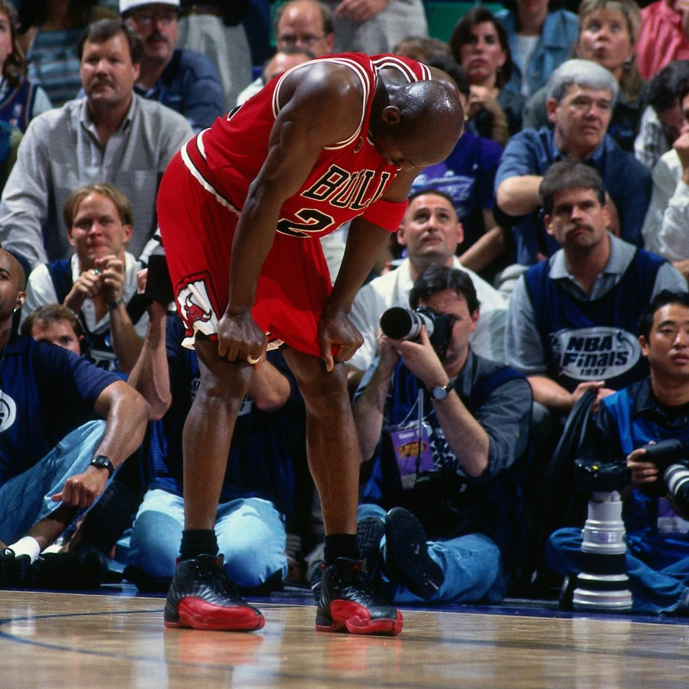
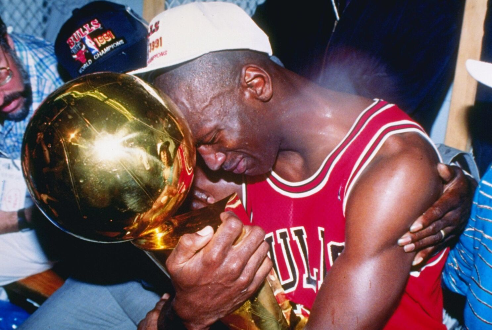

Jordan 1s OG Chicago
It was in the Air Jordan 1 "Chicago" that Jordan set an NBA record, scoring 63 points in a single playoff game against the Boston Celtics in 1986.
Fun fact is that Michael Jordan didn't actually have the flu. Before Game 5, play-by-play announcer Marv Albert declared that Jordan was suffering from "flu-like symptoms." After the game, Jordan said that he was "almost dehydrated" and felt like he "couldn't breathe."
6x NBA CHAMPION. 6x Finals MVP. 5x NBA MVP. 14x NBA ALLSTAR. 9x NBA All-Defensive First Team. 10x All-NBA First Team.
